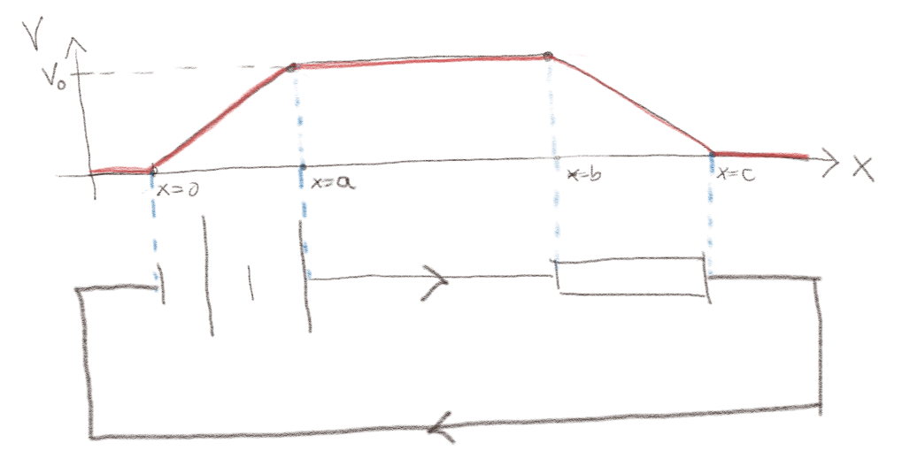

(Lærebok 13.1)
Figuren viser en krets med et kjemisk batteri og en motstand. Potensialet er skissert langs \( x \)-aksen.

a) Hva er det elektriske feltet \( \vec{E} \) i batteriet?
Hvordan er det elektriske feltet forbundet med potensialet, \( V(x) \)?
\( -V_0/a \x \).
Det elektriske feltet er gitt som \( \vec{E} = - \nabla V \) som her gir at $$ \begin{equation} \vec{E} = - \frac{\partial V}{\partial x}\x = -\frac{V_0}{(a-0)} \x= - \frac{V_0}{a} \x \; . \tag{1} \end{equation} $$
b) Hva er netto kraft på en ladning \( Q \) i batteriet?
Hvordan varierer strømmen gjennom et tverrsnitt gjennom batteriet seg og hva sier det om hastigheten til en ladning?
0
Strømmen gjennom batteriet vil være konstant. Vi tenker oss derfor at hastigheten til en ladning inne batteriet er konstant. Da må netto kraft være null på en ladning.
c) Hvilke krefter virker på en ladning \( Q \) inne i batteriet?
Vi tenker oss at det er tre krefter som virker på en ladning: En kraft fra det elektriske feltet som skyldes at det er høyere potensial ved \( x=a \) enn ved \( x=0 \). Du kan tenke på dette som f.eks. feltet i en kondensator. Dessuten virker den en ikke-coulombsk kraft fra batteriet. Vi tenker ikke nå på opphavet til denne kraften. Dessuten vil det kunne virke en effektiv kraft som motvirker bevegelsen til ladningene, en motstandskraft, slik det er inne i en motstand. Vi antar at denne er liten, dvs. at den indre motstanden i batteriet er tilnærmet null.
d) Hva er \( \vec{f}_{NC} \), den ikke-Coulumbske kraften per ladning, i batteriet?
\( \vec{f}{NC} = (V_0/a) \x \).
Siden netto kraft på en ladning \( Q \) er null må $$ \begin{equation} Q \vec{E} + \vec{F}_{NC} = 0 \quad \Rightarrow \quad \vec{F}_{NC} = - Q \vec{E} = Q\frac{V_0}{a} \x \; . \tag{2} \end{equation} $$ Vi finner derfor at $$ \begin{equation} \vec{f}_{NC} = \frac{\vec{F}_{NC}}{Q} = \frac{V_0}{a} \x \; . \tag{3} \end{equation} $$
e) Hva er emf'en til batteriet?
\( e = V_0 \).
Vi finner emf'en, \( e \), til batteriet fra $$ \begin{equation} e = \oint_C \vec{f}_{NC} \cdot \d \vec{l} \; , \tag{4} \end{equation} $$ hvor integralet er for \( C \) som går rundt hele kretsen. Men \( \vec{f}_{NC} \) virker bare på en ladning inne i batteriet og er null utenfor. Emf'en er derfor kun gitt av integralet fra \( x = 0 \) til \( x = a \) inne i batteriet. Da finner vi $$ \begin{equation} e = \int_0^a \frac{V_0}{a}\x \cdot \x \d x = V_0 \; . \tag{5} \end{equation} $$ Dette er ikke overraskende. Emf'en til batteriet er nettopp det spenningen øker med over batteriet, som er \( V_0 \).
f) Hva er Kirchoffs spenningslov for denne kretsen?
Dette er repetisjon fra tidligere. Kirchoffs spenningslov sier at summen av spenningsøkninger og spenningsfall langs kretsen er null: $$ \begin{equation} e - RI = 0 \; . \tag{6} \end{equation} $$
(Lærebok 13.1.1)